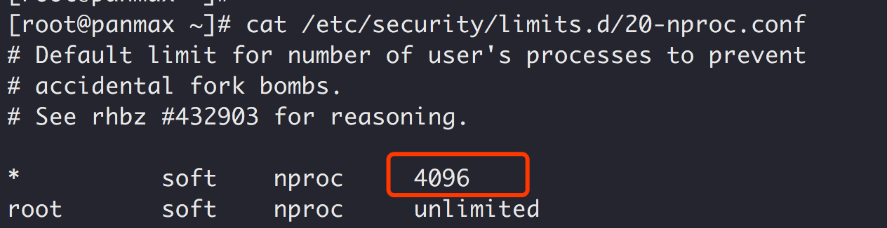

作为 Java 程序员，我们几乎都会碰到 java.lang.OutOfMemoryError 异常。
JVM 在抛出 java.lang.OutOfMemoryError 时，除了会打印出一行描述信息，还会打印堆栈跟踪，因此我们可以通过这些信息来找到导致异常的原因。
其中一种异常是 java.lang.OutOfMemoryError: Unable to create native threads，我们通过这篇文章来彻底搞懂它。
抛出这个异常的过程大概是这样的：
- Java 程序向 JVM 请求创建一个新的 Java 线程。
- JVM 本地代码（Native Code）代理该请求，通过调用操作系统 API 去创建一个操作系统级别的线程 Native Thread。
- 操作系统尝试创建一个新的 Native Thread，需要同时分配一些内存给该线程，每一个 Native Thread 都有一个线程栈，线程栈的大小由 JVM 参数-Xss决定。
- 由于各种原因，操作系统创建新的线程可能会失败，下面会详细谈到。
- JVM 抛出
java.lang.OutOfMemoryError: Unable to create new native thread错误。
因此关键在于第四步线程创建失败，JVM 就会抛出 OutOfMemoryError，那具体有哪些因素会导致线程创建失败呢？
- JVM 内存大小限制
ulimit -u限制- 参数
sys.kernel.threads-max限制 - 参数
sys.kernel.pid_max限制
第一种失败原因简单说一下：Java 创建一个线程需要消耗一定的栈空间，并通过-Xss参数指定。需要注意的是栈空间如果过小，可能会导致 StackOverflowError，尤其是在递归调用的情况下，但是栈空间过大会占用过多内存。
同时还要注意，对于一个 32 位 Java 应用来说，用户进程空间是 4GB，内核占用 1GB，那么用户空间就剩下 3GB，因此它能创建的线程数大致可以通过这个公式算出来：
1 | Max memory（3GB） = [-Xmx] + [-XX:MaxMetaSpaceSize] + number_of_threads * [-Xss] |
不过对于 64 位的应用，由于虚拟进程空间近乎无限大，因此不会因为线程栈过大而耗尽虚拟地址空间。但是请你注意，64 位的 Java 进程能分配的最大内存数仍然受物理内存大小的限制。
下边重点来介绍后边三种失败因素。
在搞明白 pid_max、ulimit -u 和 thread_max 的区别前，需要先明白进程和线程之间的区别。
一个最典型的区别是，（同一个进程内的）线程运行时共享内存空间，而进程在独立的内存空间中运行。
pid_max
pid_max 参数表示系统全局的 PID 号数值的限制，每一个进程都有 ID，ID 的值超过这个数，进程就会创建失败，pid_max 参数可以通过以下命令查看：
1 | cat /proc/sys/kernel/pid_max |
默认情况下，执行以上命令返回 32768，这意味着我们可以在系统中同时运行 32768 个进程，这些进程可以在独立的内存空间中运行。
修改方法
echo 65535 > /proc/sys/kernel/pid_max
上面只是临时生效，重启机器后会失效
永久生效方法：
在 /etc/sysctl.conf 中添加 kernel.pid_max = 65535
1 | vi /etc/sysctl.conf |
或者：
1 | echo "kernel.pid_max = 65535" >> /etc/sysctl.conf |
threads-max
treamd-max 用来限制操作系统全局的线程数，通过以下命令查看 treamd-max 参数：
1 | cat /proc/sys/kernel/threads-max |
上边的命令返回 126406，这意味着我可以在共享内存空间中拥有 126406 个线程。
ulimit -u
limit -u 表示当前用户可以运行的最大进程数。
这个值怎么来的
root 账号下 ulimit -u 得到的值默认是 cat /proc/sys/kernel/threads-max 的值 / 2，即系统线程数的一半。
普通账号下 ulimit -u 得到的值默认是 /etc/security/limits.d/20-nproc.conf文件中指定的：

修改方式
1 | ulimit -u 65535 |
ulimit 受到全局限制
ulimit -u 的值受全局的 kernel.pid_max 的值限制。也就是说如果 kernel.pid_max=1024，那么即使你的 ulimit -u 的值是 63203，用户能打开的最大进程数还是 1024。